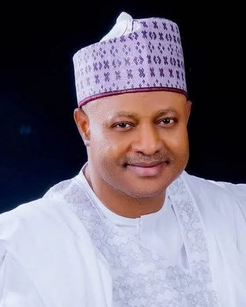
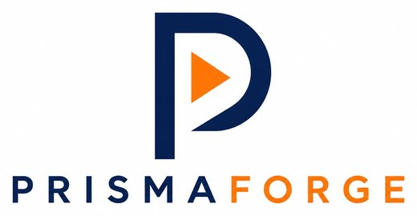

Hear your views
Your views and observations on education, welfare, security, jobs and more, heard directly and counted, not left to chance.
Directorate of Student Mobilization · Kaduna State
The Directorate is committed to hearing students' views and observations, linking students with opportunities, and finding the best route to student inclusion, now and in the future.
About 5 minutes · Confidential · For ND, NCE, HND, undergraduate and postgraduate students

“Students are not only the leaders of tomorrow; they are partners today. Kaduna Student Voice gives every student, on every campus and in every ward, a direct line to tell us what is working, what is not, and what must come next. We are listening, and we will act on what you tell us.”
Our commitment
Your views and observations on education, welfare, security, jobs and more, heard directly and counted, not left to chance.
Scholarships, bursaries, NELFUND, skills and ICT training, internships and empowerment programmes, matched to the students who need them.
Find the best route for student inclusion in government, today and in the future, with evidence from every institution, LGA and ward.
How it works
Partner and technical implementer

Prismaforge is the technical partner behind Kaduna Student Voice: the survey, the Directorate dashboard and the secure data platform.
Add your voice, then share the link with your classmates and departmental groups. Want to do more? You can sign up to volunteer at the end of the survey.
Share your voice nowYour contact details are kept confidential and seen only by the Directorate.